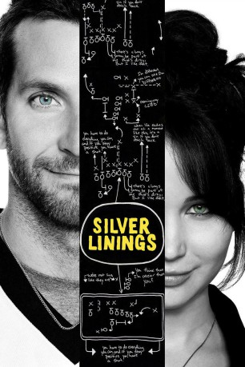

#228 Silver Linings
Alternativ: Silver Linings Playbook
Auszeichnungen: 1 Oscars gewonnen für 7 Oscars nominiert 1 GoldenGlobes gewonnen 1 BAFTA-Awards gewonnen
 
 IMDB-Wertung: 7.7 / 10
IMDB-Wertung: 7.7 / 10  Metascore: 81
Metascore: 81 
Der ehemalige Lehrer und Mittdreißiger Pat Peoples wurde mit gewissen Auflagen aus einer Heilanstalt entlassen, wo er einige Zeit wegen psychischer Probleme zugebracht hatte. Zu den Auflagen gehört auch, dass er jeglichen Kontakt zu seiner Ex-Frau Nikki zu unterlassen hat. Während seine Mutter ihn vorbehaltlos umsorgt, ist sein Vater Patrick mehr als skeptisch, ob es eine gute Idee war, die Anstalt wieder zu verlassen. Derweil setzt Pat alles daran, sich wieder in Form zu bringen und Nikki wieder zurückzugewinnen. Auf seinen ausgiebigen Joggingtouren trifft er auf Tiffany, die ihren Mann, der Polizist war, bei einem Einsatz verloren hat, und nun die Trauerarbeit durch nymphomane Tendenzen kompensiert. Sie verspricht Pat, den Kontakt zu Nikki herzustellen, wenn er mit ihr für ein Tanzturnier trainiert. An sich ein klarer Deal; aber je näher der Tag des Wettbewerbs rückt, desto verwickelter wird die Angelegenheit.
Jahr: 2012
Dauer: 122 Minuten
FSK: 12
Land: USA Studio: Weinstein Company, TheTonspuren: DTS - ,
Untertitel: Deutsch,
Auflösung: 1080p (1920×800) Größe: 11366 MB
Genre: Komödie, Drama, Liebe
Regisseur: David O. Russell
Drehbuch: David O. Russell, Matthew Quick
Soundtrack: Danny Elfman
Darsteller:
 Bradley Cooper als Pat
Bradley Cooper als Pat Jennifer Lawrence als Tiffany
Jennifer Lawrence als Tiffany Robert De Niro als Pat Sr.
Robert De Niro als Pat Sr. Jacki Weaver als Dolores
Jacki Weaver als Dolores Chris Tucker als Danny
Chris Tucker als Danny Anupam Kher als Dr. Cliff Patel
Anupam Kher als Dr. Cliff Patel John Ortiz als Ronnie
John Ortiz als Ronnie Shea Whigham als Jake
Shea Whigham als Jake Julia Stiles als Veronica
Julia Stiles als Veronica Paul Herman als Randy
Paul Herman als Randy Dash Mihok als Officer Keogh
Dash Mihok als Officer Keogh Patrick McDade als Tiffany's Father
Patrick McDade als Tiffany's Father- Brea Bee als Nikki
- Mary Regency Boies als Regina
- Phillip Chorba als Jordie
- Patsy Meck als Nancy, High School Principal
- Jeff Reim als Jeffrey
 Bonnie Aarons als Ricky D'Angelo's Mother
Bonnie Aarons als Ricky D'Angelo's Mother- Ted Barba als Doug Culpepper
- Pete Postiglione als Lawyer at Bar
 Dicky Eklund Jr. als Fighting Eagle Fan
Dicky Eklund Jr. als Fighting Eagle Fan- Samantha Gelnaw als Jake's Fiancée
- Tiffany E. Green als Tanya
 Erica Lynne Arden als Dance Competition Spectator / Bikini Tailgater , uncredited
Erica Lynne Arden als Dance Competition Spectator / Bikini Tailgater , uncredited Robert Bizik als Neighbor , uncredited
Robert Bizik als Neighbor , uncredited Maria Breyman als Diner Cop , uncredited
Maria Breyman als Diner Cop , uncredited Joe Cappelletti als Football Play By Play Announcer , uncredited
Joe Cappelletti als Football Play By Play Announcer , uncredited- Michael Connolly als Spectator , uncredited
 Alan Davis als Dance Competition Spectator , uncredited
Alan Davis als Dance Competition Spectator , uncredited- Luisa Diaz als MILF , uncredited
- Chris Dyer als Dance Competition Spectator , uncredited
 Mark Falvo als Tailgater , uncredited
Mark Falvo als Tailgater , uncredited Liam Ferguson als Singing Eagles Fan , uncredited
Liam Ferguson als Singing Eagles Fan , uncredited- Jade Froeder als Dance Competition Spectator , uncredited
- Rachel Goodman als Eagle's fan jumping with Bradley Cooper , uncredited
 Matt Gulbranson als Father , uncredited
Matt Gulbranson als Father , uncredited Andrea Havens als Family Member , uncredited
Andrea Havens als Family Member , uncredited- Dennis Jeantet als Singing Eagles Fan / Ballroom Spectator , uncredited
- Adam Zebediah Joseph als Halloween Pirate , uncredited
- JaQuinley Kerr als Spectator , uncredited
 Basil Kershner als Moviegoer , uncredited
Basil Kershner als Moviegoer , uncredited David Kneeream als Movie-goer , uncredited
David Kneeream als Movie-goer , uncredited Michael J. Kraycik als Landscaper , uncredited
Michael J. Kraycik als Landscaper , uncredited- Marty Krzywonos als Tailgater , uncredited
- Traci Law als Diner Guest , uncredited
 Raymond Mamrak als Tailgate Fan , uncredited
Raymond Mamrak als Tailgate Fan , uncredited- Montana Marks als Bikini Tailgater , uncredited
- Jeni Miller als Sexy Girl at Halloween Party , uncredited
- Carol Anne Mueller als Dance Competition Spectator , uncredited
 Charles Pendelton als Recital Guest , uncredited
Charles Pendelton als Recital Guest , uncredited
Datei: X:\2012(N-Z)\Silver Linings (2012, FSK12, 1920x800).mkv seit 14.02.2015
Festplatte: HD 2012(N-Z)-2013(A-H)
 Es gibt insgesamt 138 Filme in der Gruppe '2012(N-Z)'
Es gibt insgesamt 138 Filme in der Gruppe '2012(N-Z)'